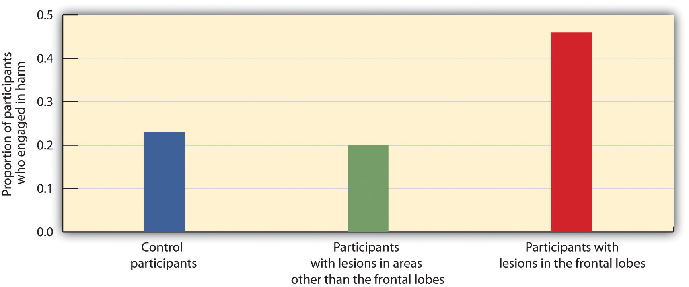
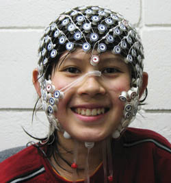
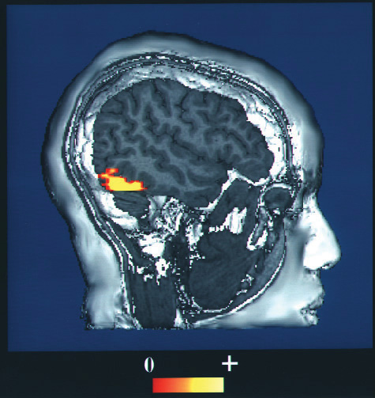

One problem in understanding the brain is that it is difficult to get a good picture of what is going on inside it. But there are a variety of empirical methods that allow scientists to look at brains in action, and the number of possibilities has increased dramatically in recent years with the introduction of new neuroimaging techniques. In this section we will consider the various techniques that psychologists use to learn about the brain. Each of the different techniques has some advantages, and when we put them together, we begin to get a relatively good picture of how the brain functions and which brain structures control which activities.
Perhaps the most immediate approach to visualizing and understanding the structure of the brain is to directly analyze the brains of human cadavers. When Albert Einstein died in 1955, his brain was removed and stored for later analysis. Researcher Marian Diamond (1999)Diamond, M. C. (1999). Why Einstein’s brain? New Horizons for Learning. Retrieved from http://www.newhorizons.org/neuro/diamond_einstein.htm later analyzed a section of the Einstein’s cortex to investigate its characteristics. Diamond was interested in the role of glia, and she hypothesized that the ratio of glial cells to neurons was an important determinant of intelligence. To test this hypothesis, she compared the ratio of glia to neurons in Einstein’s brain with the ratio in the preserved brains of 11 other more “ordinary” men. However, Diamond was able to find support for only part of her research hypothesis. Although she found that Einstein’s brain had relatively more glia in all the areas that she studied than did the control group, the difference was only statistically significant in one of the areas she tested. Diamond admits a limitation in her study is that she had only one Einstein to compare with 11 ordinary men.
An advantage of the cadaver approach is that the brains can be fully studied, but an obvious disadvantage is that the brains are no longer active. In other cases, however, we can study living brains. The brains of living human beings may be damaged, for instance, as a result of strokes, falls, automobile accidents, gunshots, or tumors. These damages are called lesions. In rare occasions, brain lesions may be created intentionally through surgery, such as that designed to remove brain tumors or (as in split-brain patients) to reduce the effects of epilepsy. Psychologists also sometimes intentionally create lesions in animals to study the effects on their behavior. In so doing, they hope to be able to draw inferences about the likely functions of human brains from the effects of the lesions in animals.
Lesions allow the scientist to observe any loss of brain function that may occur. For instance, when an individual suffers a stroke, a blood clot deprives part of the brain of oxygen, killing the neurons in the area and rendering that area unable to process information. In some cases, the result of the stroke is a specific lack of ability. For instance, if the stroke influences the occipital lobe, then vision may suffer, and if the stroke influences the areas associated with language or speech, these functions will suffer. In fact, our earliest understanding of the specific areas involved in speech and language were gained by studying patients who had experienced strokes.
Figure 3.13

Areas in the frontal lobe of Phineas Gage were damaged when a metal rod blasted through it. Although Gage lived through the accident, his personality, emotions, and moral reasoning were influenced. The accident helped scientists understand the role of the frontal lobe in these processes.
Source: Photo courtesy of John M. Harlow, http://en.wikipedia.org/wiki/File:Phineas_gage_-_1868_skull_diagram.jpg.
It is now known that a good part of our moral reasoning abilities are located in the frontal lobe, and at least some of this understanding comes from lesion studies. For instance, consider the well-known case of Phineas Gage, a 25-year-old railroad worker who, as a result of an explosion, had an iron rod driven into his cheek and out through the top of his skull, causing major damage to his frontal lobe (Macmillan, 2000).Macmillan, M. (2000). An odd kind of fame: Stories of Phineas Gage. Cambridge, MA: MIT Press. Although remarkably Gage was able to return to work after the wounds healed, he no longer seemed to be the same person to those who knew him. The amiable, soft-spoken Gage had become irritable, rude, irresponsible, and dishonest. Although there are questions about the interpretation of this case study (Kotowicz, 2007),Kotowicz, Z. (2007). The strange case of Phineas Gage. History of the Human Sciences, 20(1), 115–131. it did provide early evidence that the frontal lobe is involved in emotion and morality (Damasio et al., 2005).Damasio, H., Grabowski, T., Frank, R., Galaburda, A. M., Damasio, A. R., Cacioppo, J. T., & Berntson, G. G. (2005). The return of Phineas Gage: Clues about the brain from the skull of a famous patient. In Social neuroscience: Key readings (pp. 21–28). New York, NY: Psychology Press.
More recent and more controlled research has also used patients with lesions to investigate the source of moral reasoning. Michael Koenigs and his colleagues (Koenigs et al., 2007)Koenigs, M., Young, L., Adolphs, R., Tranel, D., Cushman, F., Hauser, M., & Damasio, A. (2007). Damage to the prefontal cortex increases utilitarian moral judgments. Nature, 446(7138), 908–911. asked groups of normal persons, individuals with lesions in the frontal lobes, and individuals with lesions in other places in the brain to respond to scenarios that involved doing harm to a person, even though the harm ultimately saved the lives of other people (Miller, 2008).Miller, G. (2008). The roots of morality. Science, 320, 734–737.
In one of the scenarios the participants were asked if they would be willing to kill one person in order to prevent five other people from being killed. As you can see in Figure 3.14 "The Frontal Lobe and Moral Judgment", they found that the individuals with lesions in the frontal lobe were significantly more likely to agree to do the harm than were individuals from the two other groups.
Figure 3.14 The Frontal Lobe and Moral Judgment
Koenigs and his colleagues (2007)Koenigs, M., Young, L., Adolphs, R., Tranel, D., Cushman, F., Hauser, M., & Damasio, A. (2007). Damage to the prefontal cortex increases utilitarian moral judgments. Nature, 446(7138), 908–911. found that the frontal lobe is important in moral judgment. Persons with lesions in the frontal lobe were more likely to be willing to harm one person in order to save the lives of five others than were control participants or those with lesions in other parts of the brain.
In addition to lesion approaches, it is also possible to learn about the brain by studying the electrical activity created by the firing of its neurons. One approach, primarily used with animals, is to place detectors in the brain to study the responses of specific neurons. Research using these techniques has found, for instance, that there are specific neurons, known as feature detectors, in the visual cortex that detect movement, lines and edges, and even faces (Kanwisher, 2000).Kanwisher, N. (2000). Domain specificity in face perception. Nature Neuroscience, 3(8), 759–763.
Figure 3.15
A participant in an EEG study has a number of electrodes placed around the head, which allows the researcher to study the activity of the person’s brain. The patterns of electrical activity vary depending on the participant’s current state (e.g., whether he or she is sleeping or awake) and on the tasks the person is engaging in.
Source: Photo courtesy of the University of Oregon Child and Family Center, http://www.uoregon.edu/~cfc/projects-bbl.htm.
A less invasive approach, and one that can be used on living humans, is electroencephalography (EEG)A technique that records the electrical activity produced by the brain’s neurons through the use of electrodes placed around the research participant’s head.. The EEG is a technique that records the electrical activity produced by the brain’s neurons through the use of electrodes that are placed around the research participant’s head. An EEG can show if a person is asleep, awake, or anesthetized because the brain wave patterns are known to differ during each state. EEGs can also track the waves that are produced when a person is reading, writing, and speaking, and are useful for understanding brain abnormalities, such as epilepsy. A particular advantage of EEG is that the participant can move around while the recordings are being taken, which is useful when measuring brain activity in children who often have difficulty keeping still. Furthermore, by following electrical impulses across the surface of the brain, researchers can observe changes over very fast time periods.
Although the EEG can provide information about the general patterns of electrical activity within the brain, and although the EEG allows the researcher to see these changes quickly as they occur in real time, the electrodes must be placed on the surface of the skull and each electrode measures brain waves from large areas of the brain. As a result, EEGs do not provide a very clear picture of the structure of the brain.
But techniques exist to provide more specific brain images. Functional magnetic resonance imaging (fMRI)A neuroimaging technique that uses a magnetic field to create images of brain structure and function. is a type of brain scan that uses a magnetic field to create images of brain activity in each brain area. The patient lies on a bed within a large cylindrical structure containing a very strong magnet. Neurons that are firing use more oxygen, and the need for oxygen increases blood flow to the area. The fMRI detects the amount of blood flow in each brain region, and thus is an indicator of neural activity.
Very clear and detailed pictures of brain structures (see, e.g., Figure 3.16 "fMRI Image") can be produced via fMRI. Often, the images take the form of cross-sectional “slices” that are obtained as the magnetic field is passed across the brain. The images of these slices are taken repeatedly and are superimposed on images of the brain structure itself to show how activity changes in different brain structures over time. When the research participant is asked to engage in tasks while in the scanner (e.g., by playing a game with another person), the images can show which parts of the brain are associated with which types of tasks. Another advantage of the fMRI is that is it noninvasive. The research participant simply enters the machine and the scans begin.
Although the scanners themselves are expensive, the advantages of fMRIs are substantial, and they are now available in many university and hospital settings. fMRI is now the most commonly used method of learning about brain structure.
Figure 3.16 fMRI Image
The fMRI creates brain images of brain structure and activity. In this image the red and yellow areas represent increased blood flow and thus increased activity. From your knowledge of brain structure, can you guess what this person is doing?
Source: Photo courtesy of the National Institutes of Health, http://commons.wikimedia.org/wiki/File:Face_recognition.jpg.
There is still one more approach that is being more frequently implemented to understand brain function, and although it is new, it may turn out to be the most useful of all. Transcranial magnetic stimulation (TMS)A procedure in which magnetic pulses are applied to the brain of living persons with the goal of temporarily and safely deactivating a small brain region. is a procedure in which magnetic pulses are applied to the brain of living persons with the goal of temporarily and safely deactivating a small brain region. In TMS studies the research participant is first scanned in an fMRI machine to determine the exact location of the brain area to be tested. Then the electrical stimulation is provided to the brain before or while the participant is working on a cognitive task, and the effects of the stimulation on performance are assessed. If the participant’s ability to perform the task is influenced by the presence of the stimulation, then the researchers can conclude that this particular area of the brain is important to carrying out the task.
The primary advantage of TMS is that it allows the researcher to draw causal conclusions about the influence of brain structures on thoughts, feelings, and behaviors. When the TMS pulses are applied, the brain region becomes less active, and this deactivation is expected to influence the research participant’s responses. Current research has used TMS to study the brain areas responsible for emotion and cognition and their roles in how people perceive intention and approach moral reasoning (Kalbe et al., 2010; Van den Eynde et al., 2010; Young, Camprodon, Hauser, Pascual-Leone, & Saxe, 2010).Kalbe, E., Schlegel, M., Sack, A. T., Nowak, D. A., Dafotakis, M., Bangard, C.,…Kessler, J. (2010). Dissociating cognitive from affective theory of mind: A TMS study. Cortex: A Journal Devoted to the Study of the Nervous System and Behavior, 46(6), 769–780; Van den Eynde, F., Claudino, A. M., Mogg, A., Horrell, L., Stahl, D.,…Schmidt, U. (2010). Repetitive transcranial magnetic stimulation reduces cue-induced food craving in bulimic disorders. Biological Psychiatry, 67(8), 793–795; Young, L., Camprodon, J. A., Hauser, M., Pascual-Leone, A., & Saxe, R. (2010). Disruption of the right temporoparietal junction with transcranial magnetic stimulation reduces the role of beliefs in moral judgments. PNAS Proceedings of the National Academy of Sciences of the United States of America, 107(15), 6753–6758. TMS is also used as a treatment for a variety of psychological conditions, including migraine, Parkinson’s disease, and major depressive disorder.
Neuroimaging techniques have important implications for understanding our behavior, including our responses to those around us. Naomi Eisenberger and her colleagues (2003)Eisenberger, N. I., Lieberman, M. D., & Williams, K. D. (2003). Does rejection hurt? An fMRI study of social exclusion. Science, 302(5643), 290–292. tested the hypothesis that people who were excluded by others would report emotional distress and that images of their brains would show that they experienced pain in the same part of the brain where physical pain is normally experienced. In the experiment, 13 participants were each placed into an fMRI brain-imaging machine. The participants were told that they would be playing a computer “Cyberball” game with two other players who were also in fMRI machines (the two opponents did not actually exist, and their responses were controlled by the computer).
Each of the participants was measured under three different conditions. In the first part of the experiment, the participants were told that as a result of technical difficulties, the link to the other two scanners could not yet be made, and thus at first they could not engage in, but only watch, the game play. This allowed the researchers to take a baseline fMRI reading. Then, during a second inclusion scan, the participants played the game, supposedly with the two other players. During this time, the other players threw the ball to the participants. In the third, exclusion, scan, however, the participants initially received seven throws from the other two players but were then excluded from the game because the two players stopped throwing the ball to the participants for the remainder of the scan (45 throws).
The results of the analyses showed that activity in two areas of the frontal lobe was significantly greater during the exclusion scan than during the inclusion scan. Because these brain regions are known from prior research to be active for individuals who are experiencing physical pain, the authors concluded that these results show that the physiological brain responses associated with being socially excluded by others are similar to brain responses experienced upon physical injury.
Further research (Chen, Williams, Fitness, & Newton, 2008; Wesselmann, Bagg, & Williams, 2009)Chen, Z., Williams, K. D., Fitness, J., & Newton, N. C. (2008). When hurt will not heal: Exploring the capacity to relive social and physical pain. Psychological Science, 19(8), 789–795; Wesselmann, E. D., Bagg, D., & Williams, K. D. (2009). “I feel your pain”: The effects of observing ostracism on the ostracism detection system. Journal of Experimental Social Psychology, 45(6), 1308–1311. has documented that people react to being excluded in a variety of situations with a variety of emotions and behaviors. People who feel that they are excluded, or even those who observe other people being excluded, not only experience pain, but feel worse about themselves and their relationships with people more generally, and they may work harder to try to restore their connections with others.